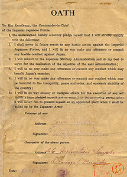

|
j
a v a s c r i p t |
June 29, 1942

Surrender Oath
POWs at Pampanga and Tarlac have been released. Each prisoner and a member of his family first had to sign an oath of loyalty to not fight against Japan or instigate anti-Japanese actions. Nimitz claims four Japanese carriers sunk at Midway: Akagi, Koga, Hiryu and Soryu; plus the cruisers Mikuma and Mogami, as well as three or four destroyers and four transports! No wonder the Japanese are desperate to conceal their losses. |
|
|
|
|